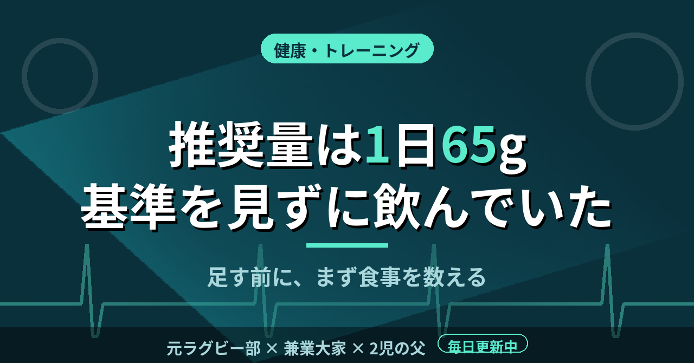

健康・トレーニングたんぱく質の推奨量は1日65g。基準を見ずにプロテインを飲み続けた増量期
増量期の僕は、プロテインは多く飲むほど効くと信じていた。1日に何gのたんぱく質が必要なのか、その基準を一度も見ないまま、ただ量を足していた。最近になって公的な数字を調べ、当時の自分に足りなかったものがはっきり見えた。
成人男性の推奨量は1日65g
日本人の食事摂取基準（2025年版）では、18〜64歳の男性のたんぱく質推奨量は1日65gである。エネルギー比の目標量は、18〜49歳で13〜20％、50〜64歳で14〜20％とされている。
この数字は、運動習慣のない人も含めた健康な成人向けの基準だ。僕の感覚では、朝昼晩の3食をきちんと食べれば届く水準である。プロテインを足す前に、まず食事で何gとれているかを数える。この順番を、僕は長い間とばしていた。
目標量はエネルギーに対する割合なので、食べる量が増えれば、グラム数も増える。たとえば1日2,500kcal食べる人なら、13〜20％は約81〜125gに当たる（1gを4kcalとして計算）。推奨量の65gと、食べる量に応じた目標量の幅は、別々の物差しである。
基準を見ずに、体重だけを見ていた
高校では1日5〜6食、大学では7〜8食を食べていた。増量系のプロテインも飲み続け、体重は60kg台後半から75kgまで増えた。身長は178cmだ。高校時代は、2Lのタッパーにご飯を詰めて食べていた時期もある。
振り返ると、量を決めていたのは体重計の数字だけだった。増えていれば続け、増えなければもっと足す。1日に何gとれているかを計算したことは、ほとんどない。基準を知っていたとしても、運動する人の必要量は別に考える必要がある。ただ、僕はその別の基準すら知らなかった。
増量が止まったとき、僕は食事全体ではなくプロテインの量を疑った。もう1杯足せば動くのではないか、と考えたのだ。本当に見るべきだったのは、1日のエネルギーとたんぱく質の合計だった。合計を見ずに一部だけを増やしても、何が効いたのかは分からない。
上限の目安はあるが、根拠は限られる
厚生労働省の研究班の報告書には、2010年版の食事摂取基準を引用して、成人は体重1kgあたり2.0g未満にとどめるのが適当とある。体重70kgなら1日140g未満という計算になる。
一方で、同じ報告書は、長期の高たんぱく質摂取が腎機能に与える影響については十分な根拠がないとも述べている。対象になった研究はすべて欧米のものだった。多すぎれば危ないとも、いくらでも大丈夫とも、現時点では言い切れないということだ。
僕はサプリを盛りすぎて、肝臓の数値を悪くした経験がある。たんぱく質そのものの話ではない。ただ、効きそうだからと足し算を続けると、数値が崩れることは身をもって知った。
今は、足すかどうかを決める前に基準の数字を見る。まず食事で数え、足りない分だけを補う。それだけで、飲む量は学生の頃よりずっと減った。数字を残しておけば、次に体を変えるときの材料にもなる。
この記事は note にも掲載しています。